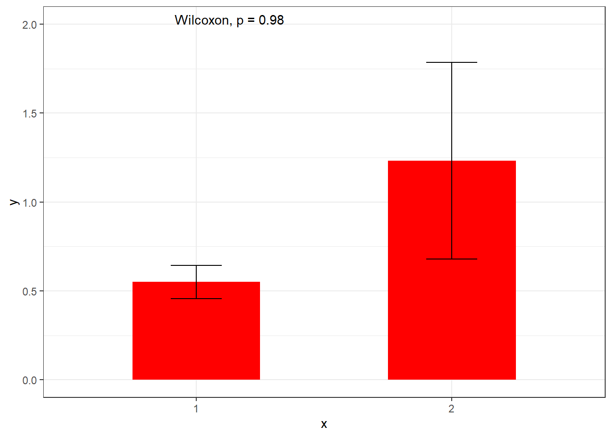
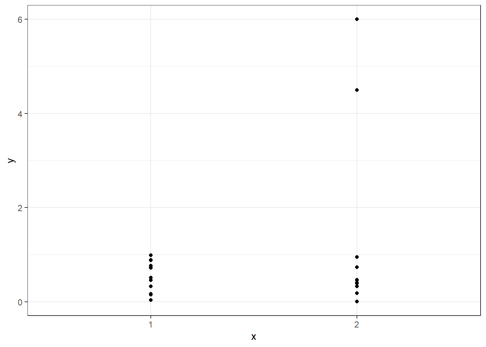
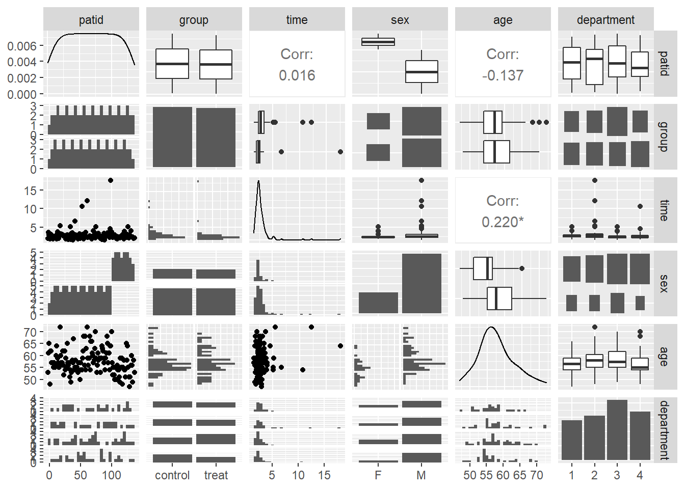
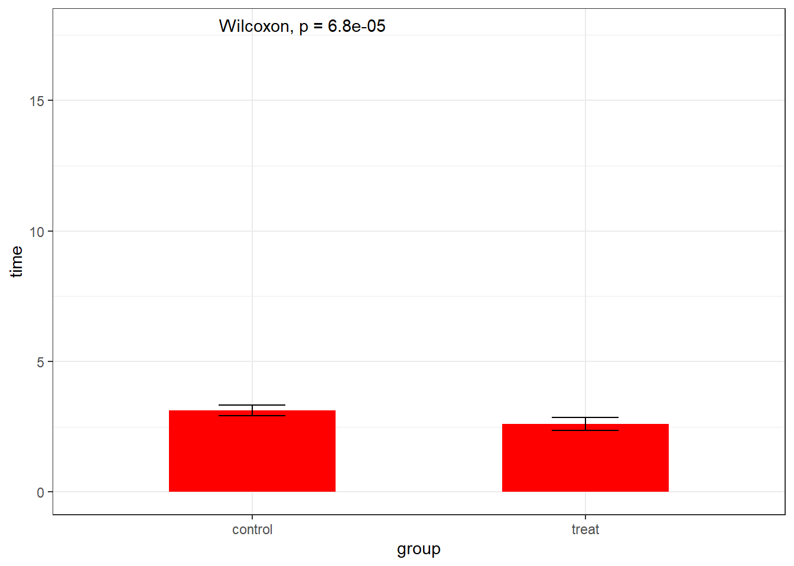
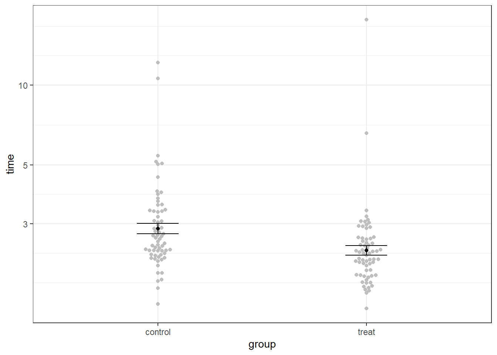
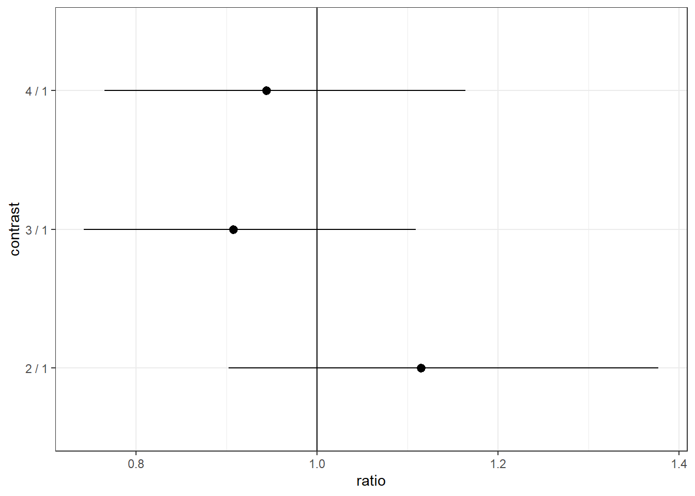

The dataset to support today’s work is here: walkingspeed.xlsx:
Powerpoint slides are here: day3.pptx
An explanation/breakdown of the code for a typical ggplot2 graph is here: flipbook.html
Plotting data is an essential part of data analysis and reporting. Your plots communicate your results, and a good plot can be the difference between a successful and unsuccessful communication.
In this session we’ll think about how to plot your data, what makes a good vs a bad plot, and illustrate some concepts for plotting using R.
Learning objectives:
While a good picture can be worth a thousand words, a bad picture can be worth none, or even do more harm than good.
Your data is likely to be complex, and you will have limited space for plotting in your reports, and so you should think carefully about which plots are important and how to choose to display your data.
Generally there are two reasons to plot data, that mirror the two main types of statistical analyses we can perform.
The first is to describe data (mirroring our descriptive analyses), the second is to describe results that come from the data (mirroring our inferential analyses). Often we are forced to meet these two objectives in the same graph, which can cause some tension!
Lets see an example. Consider our walking speed data.
Recall our aim was to test whether a rehabilitation intervention improves walking speed. We had data from a clinical trial among older men and women recruited from several hospital departments.
What are the different reasons we might make plots of the data?
In each case, who is the audience and what information to we want to extract or display?
These aspects might all need kinds of different plots at different stages of the project.
Each plot we produce needs to meet its own need. We should think about what we want to see, and then work out how to get it.
Before we model data we should visualise it. This crucial first step is often omitted in analyses and reports. Consider the follow example, that I have designed after a real analysis I worked on earlier this year, where an outcome was compared between two treatment conditions:
library(ggplot2)
library(ggpubr)
set.seed(12345)
N=12
y <- c(runif(N), c(runif(N-2), 4.5,6))
x <- factor(rep(c(1,2), each=N))
ggplot(data.frame(Group=x,y), aes(x,y)) +
stat_summary(geom="col",width=0.5, fill="red") +
stat_summary(geom="errorbar", width=0.2) +
theme_bw()+ stat_compare_means(label.y = 2)
On the face of it, it looks like the outcome is higher in group 2 than group 1. If this is all you see then this is surely the conclusion you would come to.
But why is the p-value so high? And how well do you feel like you understand the data from this graph?
Consider now how you would interpret this:
library(ggplot2)
ggplot(data.frame(Group=x,y), aes(x,y)) +
geom_point() +
theme_bw()
Quite differently? At least with this second visualisation we can see the data and draw our conclusions about what is going on directly.
Also consider, the first graph only shows you four values, two means and two standard errors (if that is what they are, I never actually told you). It’s a complete waste of ink. But how often do you see this first presentation in the scientific papers your read? When I see one of these I can’t help but wonder what horrors it is hiding.
The second graph tells us quite a lot. It tells us to maybe check our outlying data points, or to try transforming our data before analysis. We might even conclude that the two groups are more-or-less the same, except for two individuals, which may well be a real effect of treatment that is limited to specific individuals. In any case we learn a lot.
So our most important rule is: always plot your data, and not summaries of the data.
Ideally, if we have a dataset with several variables, we will make something like a graph matrix showing every variable against every other variable. This will help us identify any potential problems or outliers in 2-dimensions.
The ggpairs function in the GGally package gives us a grid layout showing all of these combinations. I think its a reasonable summary.
library(readxl)
library(GGally)
walkingdata <- read_excel(path="walkingspeed.xlsx", sheet="fixed")
walkingdata$department <- factor(walkingdata$department)
walkingdata$time <- as.numeric(walkingdata$time)
walkingdata$time[walkingdata$time>100] <- NA
walkingdata$time[walkingdata$time<1] <- NA
ggpairs(walkingdata, columns=1:6)
Note I’m not wasting a lot of time making this graph pretty. It’s for me only, I don’t care what it looks like, I just want to see the data as quickly and as effectively as possible. I’ve also left patient ID in here as a variable, there’s no harm doing this, and it might show me if any data errors have occurred.
Does this graph meet all of the objectives that we set out for our ‘descriptive’ analyses above?
While the descriptive graphs tells us about the data, it doesn’t tell us much about the comparison we are interested in making.
To think about how we could graph that, first think about what exactly it is we are trying to show.
Lets go back to our linear model from last time:
model1 <- lm(data=walkingdata, log(time) ~ group + sex + age + factor(department))
summary(model1)##
## Call:
## lm(formula = log(time) ~ group + sex + age + factor(department),
## data = walkingdata)
##
## Residuals:
## Min 1Q Median 3Q Max
## -0.66614 -0.17268 -0.02574 0.09920 1.76808
##
## Coefficients:
## Estimate Std. Error t value Pr(>|t|)
## (Intercept) 0.180866 0.343877 0.526 0.59985
## grouptreat -0.184903 0.059587 -3.103 0.00237 **
## sexM 0.038621 0.072702 0.531 0.59620
## age 0.014986 0.006238 2.402 0.01777 *
## factor(department)2 0.108484 0.088572 1.225 0.22295
## factor(department)3 -0.097133 0.084065 -1.155 0.25011
## factor(department)4 -0.057919 0.087749 -0.660 0.51044
## ---
## Signif. codes: 0 '***' 0.001 '**' 0.01 '*' 0.05 '.' 0.1 ' ' 1
##
## Residual standard error: 0.3378 on 125 degrees of freedom
## (3 observations deleted due to missingness)
## Multiple R-squared: 0.1723, Adjusted R-squared: 0.1325
## F-statistic: 4.336 on 6 and 125 DF, p-value: 0.0005211What is the key information here that we need to communicate?
We should say what our estimate of the treatment effect is, and how sure we are of this. That is the ‘actionable’ result from this work, and that is what we want people to take away from our analysis. The fact of the treatments being ‘significantly’ different is interesting but not enough on its own. So from our analysis we should be trying to communicate the estimate of treatment effect, the standard error of treatment effect, and potentially the p-value and a confidence interval for the difference.
The mean time in each group is perhaps interesting descriptively, so people can understand our sample. It’s hard to see why the standard error within each group should be of interest.
So - do I even need a graph? Should this summary statistic, mean difference = 0.19 (standard error=0.06; p=0.0015) be enough? Recall that this was calculated on a logarithmic scale, so it’s probably best to exponentiate it and report a ratio:
library(emmeans)
em1 <- emmeans(model1,
trt.vs.ctrl~group,
type="response")$contrast
confint(em1)So we could say “times for treated group were 83% of the times for the control group (95% CI=74% to 93%)”. Or: “treatment improved times by 17% (95% CI=7-26%).”
Is this enough? I think so, if combined with a visual summary that persuades us that the model is reasonable, and we have the descriptive graph that shows us this difference in the context of the variance in the data.
Compare this with the traditional presentation:
library(ggpubr) # includes the stat_compare_means function
ggplot(walkingdata, aes(x=group, y=time)) +
stat_summary(geom="col", width=0.5, fill="red") +
stat_summary(geom="errorbar", width=.2) +
scale_x_discrete(na.translate=FALSE) +
theme_bw() +
stat_compare_means()
or better, but still not so informative:
library(ggpubr)
library(ggbeeswarm)
ggplot(remove_missing(walkingdata), aes(x=group, y=time)) +
geom_beeswarm(col="grey") +
stat_summary(geom="errorbar", width=.2) +
stat_summary(geom="point", width=.2) +
theme_bw()+ scale_y_log10() +
stat_compare_means(method="t.test",
label = "p.signif",
comparisons=list(c("treated", "control")))
Could you say what the treatment effect is by looking at this graph? How sure would you be about it? Also, how would you represent a model other than a simple comparison of means (for example, the multiple linear regression model that we estimated). By confusing the descriptive with the inferential graph we are limiting our ability to conduct the appropriate statistical analysis.
Suppose we wanted to compare several groups, say time over department, then a visualisation might be useful:
library(emmeans)
library(broom)
em2 <- emmeans(model1,
trt.vs.ctrl~department,
type="response")$contrast
td <- tidy(em2, conf.int = TRUE)
tdggplot(td) +
aes(x=contrast, y=ratio, ymax=conf.high, ymin=conf.low) +
geom_pointrange() +
coord_flip() +
geom_hline(yintercept=1) + theme_bw()
Some tips:
Now go read this:
https://www.cedricscherer.com/2019/05/17/the-evolution-of-a-ggplot-ep.-1/